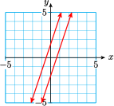
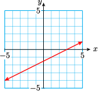

Section 4.3 Algebraic Solution of Systems
¶Subsection
In the previous Lesson, we compared the costs of operating two different refrigerators, a standard model and an energy-efficient model. We wrote a system of equations for this problem,
where \(x\) is the number of months the refrigerator has been running. We looked for a point on the graphs where the two \(y\)-values, which represent the costs, are equal. This point is the intersection point of the graphs, as shown in the figure. The \(x\)-coordinate of the intersection point shows that the costs are equal after 50 months.

We can also solve the system using algebra.
Example 4.15.
Solve the system algebraically.
We are looking for the point where the two \(y\)-values are equal. Therefore, we set the two expressions for \(y\) equal, which gives us an equation in \(x\) to solve:
We find that \(x=50\text{,}\) the same answer we got using graphing. Substituting \(x=50\) into either equation gives \(y=1300\text{.}\) The solution is \((50, 1300)\text{.}\)
Subsection Substitution Method
In Example 1, we solved the system by equating the two expressions for \(y\text{.}\) We can think of this procedure as substituting the expression for \(y\) from one equation into the other equation, like this:
Look Closer.
The method works well in this example because both equations in the system were already in the form \(y=mx+b\text{.}\) Sometimes we must solve one of the equations for \(y\) in terms of \(x\) before we can substitute.
Example 4.16.
Use substitution to solve the system.
We first solve one of the equations for \(y\) in terms of \(x\text{.}\) It is easier to solve the first equation for \(x\text{,}\) by subtracting from both sides to get:
We now substitute the expression \(1-3x\) for \(y\) in the other equation:
This is the \(x\)-coordinate of the solution point. To find the \(y\)-coordinate, we substitute \(x=\alert{-3}\) into either of the original equations. It is easiest to use the equation we solved for \(y\text{,}\) namely \(y=1-3x\text{.}\)
The solution to the system is \(x=-3,~ y=10\text{,}\) or the point \((-3,10)\text{.}\) You can check that these values satisfy both of the original equations in the system.
Subsubsection Reading Questions
1.
What is the first step in the substitution method?
2.
How can you check your answer for the solution of a system?
Here is a summary of the substitution method.
To Solve a System by Substitution.
- Choose one of the variables in one of the equations. (It is best to choose a variable whose coefficient is 1 or \(-1\text{.}\)) Solve the equation for that variable.
- Substitute the result of Step 1 into the other equation. This gives an equation in one variable.
- Solve the equation obtained in Step 2. This gives the solution value for one of the variables. Substitute this value into the result of Step 1 to find the solution value of the other variable.
Subsection Elimination Method
A second algebraic method for solving systems is called elimination. As with the substitution method, we try to obtain an equation in a single variable, but we do it by eliminating one of the variables in the system. We first put both equations into the general linear form, \(Ax+By = C\text{.}\)
Example 4.17.
Solve the system
First, we rewrite each equation in the form \(Ax+By=C\text{.}\)
We add the equations together by adding the left side of the first equation to the left side of the second equation, and then adding the two right sides together, as follows:
Note that the \(y\)-terms canceled, or were eliminated. We are left with an equation in \(x\) that is easy to solve:
We are not finished yet, because we must still find the value of \(y\text{.}\) We can substitute our value for \(x\) into either of the original equations, and solve for \(y\text{.}\) We'll use the second equation, \(3x+2y=19\text{:}\)
Thus, the solution is the point \((5,2)\text{.}\)
Look Ahead.
You may have noticed that this method worked because the coefficients of \(y\) in the two equations were opposites, \(2\) and \(-2\text{.}\) This caused the \(y\)-terms to cancel out when we added the two equations together. What if the coefficients of neither \(x\) nor \(y\) are opposites? Then we must multiply one or both of the equations in the system by a suitable constant.
Example 4.18.
Solve the system
We can choose to eliminate either the \(x\)-terms or the \(y\)-terms in a system. For this example, it will be faster to eliminate the \(y\)-terms. If we multiply each term of the second equation by \(-3\text{,}\) then the coefficients of \(y\) will be opposites:
Note carefully that we must multiply each term by \(-3\text{,}\) not just the \(y\)-term. We can then replace the second equation by its new version to obtain a new system, and we add the equations together:
The \(y\)-terms were eliminated, and we solve the resulting equation for \(x\) to get \(x=-2\text{.}\) Finally, we substitute \(x=-2\) into either of the equations to find \(y=5\text{.}\) The solution is \((-2,5)\text{.}\)
Caution 4.19.
In Example 4, we multiplied both sides of the equation \(3x+y=-1\) by \(-3\text{.}\) (This is an application of the Multiplication Property of Equality.) We must be careful to multiply every term on both sides of the equation by the same constant. Otherwise, we won't have an equivalent equation -- its solutions will not be the same.
When we add a multiple of one equation to the other we are making a linear combination of the equations.
The method of elimination is also called the method of linear combinations. Sometimes it is necessary to multiply both equations by suitable constants in order to eliminate one of the variables.
Example 4.20.
Use linear combinations to solve the system
This time we choose to eliminate the \(x\)-terms. We must arrange things so that the coefficients of the \(x\)-terms are opposites, so we look for the smallest integer that both 2 and 5 divide into evenly. (This number is called the lowest common multiple, or LCM, of 2 and 5.) The LCM of 2 and 5 is 10.
We want one of the coefficients of \(x\) to be 10, and the other to be \(-10\text{.}\) To achieve this, we multiply the first equation by 2 and the second equation by \(-5\text{.}\)
Adding these new equations eliminates the \(x\)-term and yields an equation in \(y\text{.}\)
We solve for \(y\) to find \(y=-1\text{.}\) Finally, we substitute \(y=\alert{-1}\) into the first equation and solve for \(x\text{.}\)
The solution to the system is \((4,-1)\text{.}\)
Subsubsection Reading Questions
3.
What is a linear combination of expressions?
4.
What is the first step in the elimination method?
Here are the steps for solving a system by elimination.
To Solve a System by Elimination.
- Write each equation in the form \(Ax+By = C\text{.}\)
- Decide which variable to eliminate. Multiply each equation by an appropriate constant so that the coefficients of that variable are opposites.
- Add the equations from Step 2 and solve for the remaining variable.
- Substitute the value found in Step 3 into one of the original equations and solve for the other variable.
Look Ahead.
How do you know which method to use to solve a system, substitution or elimination? Both methods will work on any linear system. However, substitution will be easier if one of the variables in one of the equations has a coefficient of \(1\) or \(-1\text{.}\) Otherwise, the elimination method is usually more efficient.
Subsubsection Reading Questions
5.
How do we eliminate a variable from a system?
6.
When is the substitution method easier than elimination?
Subsection Inconsistent and Dependent Systems
Recall that a system of two parallel lines has no solution and is called inconsistent. If the two equations in a system have the same graph, then every point on the graph is a solution and the system is called dependent. The elimination method will reveal whether the system falls into one of these two cases.
Example 4.21.
Solve each system by elimination.
\(\begin{aligned}[t] 3x-y=2\\ -6x+2y=3\end{aligned}\)
\(\begin{aligned} x-2y=3\\ 2x-4y=6\end{aligned}\)
-
To eliminate the \(y\)-terms, we multiply the first equation by 2 and add:
\begin{equation*} \begin{aligned}[t] 6x-2y \amp = 4 \\ \underline{-6x+2y}\amp\underline{{}= 3\vphantom{y}}\\ 0x+0y \amp = 7 \end{aligned} \end{equation*}Both variables are eliminated, and we are left with the false statement \(0=7\text{.}\) There are no values of \(x\) or \(y\) that will make this equation true, so the system has no solutions. The graph shows that the system is inconsistent.
-
To eliminate the \(x\)-terms, we multiply the first equation by \(-2\) and add:
\begin{equation*} \begin{aligned} -2x+4y \amp = -6 \\ \underline{2x-4y}\amp \underline{{}= \hphantom{-}6\vphantom{y}} \\ 0x+0y \amp = 0 \end{aligned} \end{equation*}We are left with the true but unhelpful equation \(0=0\text{.}\) The two equations are in fact equivalent (one is a constant multiple of the other), so the system is dependent. The graph of both equations is shown in the figure.
Example 5 illustrates a rule for identifying inconsistent and dependent systems.
When Using Elimination to Solve a System.
- If combining the two equations results in an equation of the form\begin{equation*} 0x+0y=k~~~~(k \not= 0) \end{equation*}then the system is inconsistent.
- If combining the two equations results in an equation of the form\begin{equation*} 0x+0y=0 \end{equation*}then the system is dependent.
Subsubsection Reading Questions
7.
How can you tell if a system is inconsistent?
8.
How can you tell if a system is dependent?
Subsection Skills Warm-Up
¶Subsubsection Exercises
Simplify each expression. Write your answers in the form \(ax+b\text{.}\)
1.
\(2x+3(4x-2)+1\)2.
\(7x-5(2x+3)-2\)3.
\(\dfrac{3}{2}(4x-6)-3x\)4.
\(\dfrac{2}{3}(6x+3)+x\)5.
\(\dfrac{2x+5}{3}-1\)6.
\(\dfrac{3x-1}{4}+2\)7.
\(x+4-\dfrac{3-5x}{2}\)8.
\(8-x-\dfrac{4+2x}{3}\)Subsubsection Answers to Skills Warm-Up
Subsubsection Exercises
Subsection Homework 4.3
For Problems 1–6, solve the system by the substitution method.
1.
\(\begin{aligned}[t] \amp y=2x\\ \amp 3x+y=10 \end{aligned}\)
2.
\(\begin{aligned}[t] \amp 2a+3b=4\\ \amp b=2a+4 \end{aligned}\)
3.
\(\begin{aligned}[t] \amp 2x-3y=4 \\ \amp x+1=3y \end{aligned}\)
4.
\(\begin{aligned}[t] \amp 2a+b=16 \\ \amp 4a-4=3b \end{aligned}\)
5.
\(\begin{aligned}[t] \amp 8r+s=4 \\ \amp 2r+7s=-8 \end{aligned}\)
6.
\(\begin{aligned}[t] \amp 36a=6-3b \\ \amp 2b=3a-5 \end{aligned}\)
For Problems 7–12, solve the system by elimination.
7.
\(\begin{aligned}[t] \amp x+y=5\\ \amp x-y=1 \end{aligned}\)
8.
\(\begin{aligned}[t] \amp 2a+b=3\\ \amp a+b=2 \end{aligned}\)
9.
\(\begin{aligned}[t] \amp 3x+2y=7\\ \amp x+y=3 \end{aligned}\)
10.
\(\begin{aligned}[t] \amp 3a=1+5b\\ \amp 2b=14+6a \end{aligned}\)
11.
\(\begin{aligned}[t] \amp 2x+3y=-1\\ \amp 3x+5y=-2 \end{aligned}\)
12.
\(\begin{aligned}[t] \amp 5z=1-3w\\ \amp 5w=2-7z \end{aligned}\)
For Problems 13–15, decide whether the system is inconsistent, dependent, or consistent.
13.
\(\begin{aligned}[t] \amp 3x-6y=6\\ \amp x-2y=3 \end{aligned}\)
14.
\(\begin{aligned}[t] \amp 8a=6+12b\\ \amp 4=6a-9b \end{aligned}\)
15.
\(\begin{aligned}[t] \amp 3p=1+7q\\ \amp 21q=9p-3 \end{aligned}\)
For Problems 16–17, which method, elimination or substitution, would be easier to apply to the system?
16.
\(\begin{aligned}[t] \amp 2u+3v=-8\\ \amp 2u-3v=-6 \end{aligned}\)
17.
\(\begin{aligned}[t] \amp 17a-b=0\\ \amp 11a+3b=4 \end{aligned}\)
For Problems 18–21,
- Choose variables for the two unknown quantities in the problem.
- Write a system of equations to model the problem.
- Solve the system and answer the question.
18.
A hamburger and a chocolate shake together contain 1030 calories. Two shakes and three hamburgers contain 2710 calories. How many calories are there in one hamburger and in one chocolate shake?
19.
Darryl is in charge of buying furniture for a new restaurant. Chairs cost $175 and tables cost $250. Darryl's budget allows $11,400 for tables and chairs, and he plans to buy four chairs for each table. How many of each can he buy?
20.
The perimeter of a rectangle is 42 meters, and its width is 13 meters less than its length. Find the dimensions of the rectangle.
21.
Three pounds of bacon and 2 pounds of coffee costs $17.80. Two pounds of bacon and 5 pounds of coffee costs $32.40. How much do 1 pound of bacon and 1 pound of coffee cost?